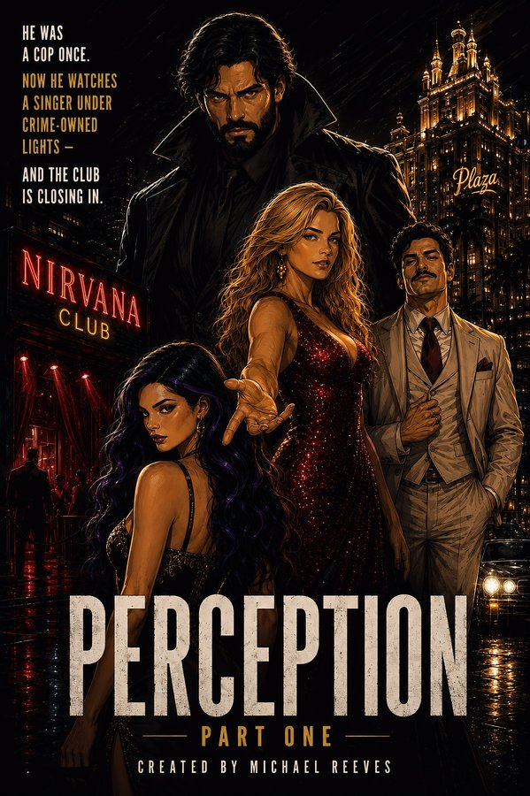
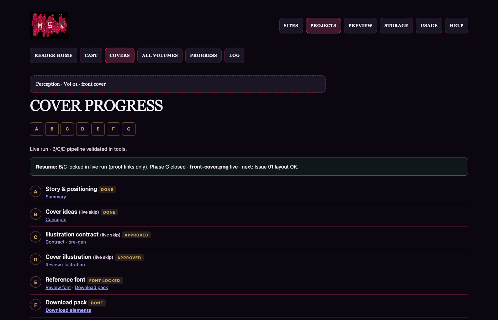
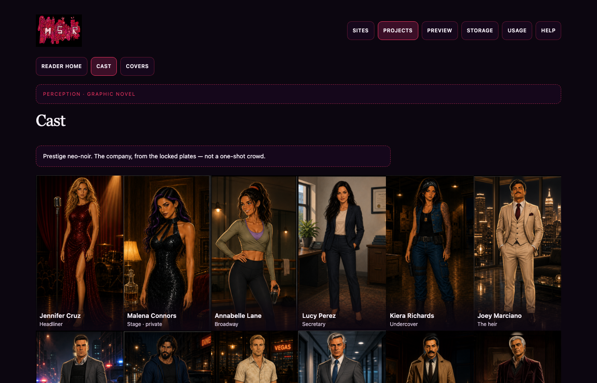
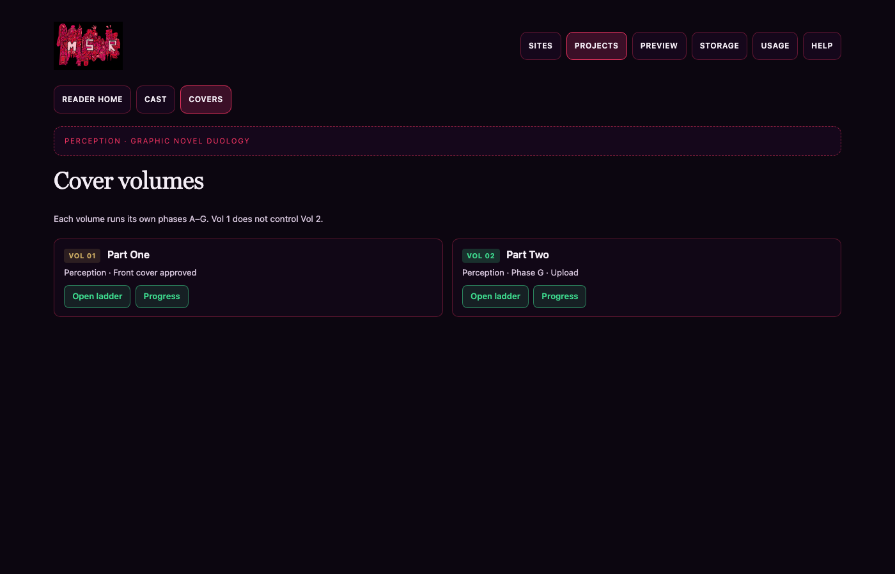
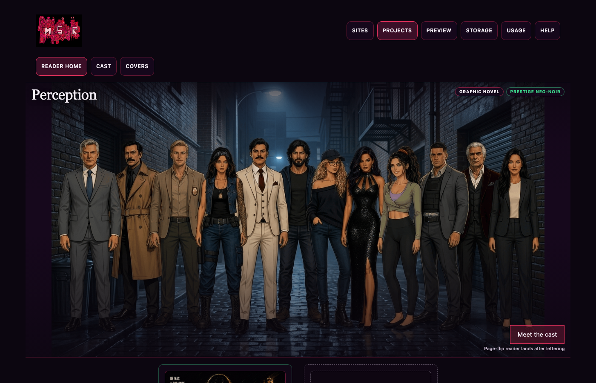
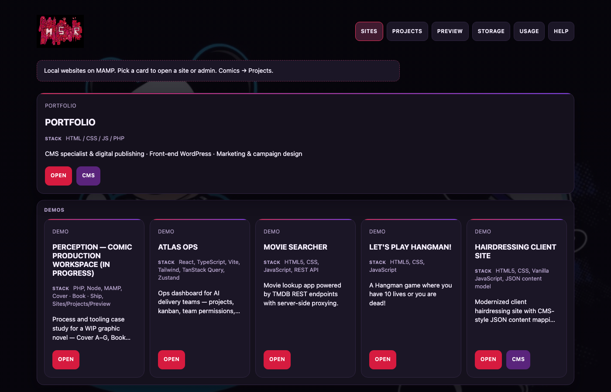

In progress
Perception — comic production workspace
A prestige crime-noir graphic novel (WIP) and the local Cover · Book · Ship workspace that produces it — process and tooling, not a finished comic product.

Project goal
Perception is a two-volume prestige crime-noir graphic novel set in the Vegas underground. Part One follows fallen operative Carl Richards in club Nirvana — grief, attraction, and crime pressure that turn glitter into a trap. The theme is perception: appearance vs truth — who Carl was, who others seem to be, and what the nightlife hides.
This portfolio page shows the production system for that book (cover hub, cast locks, issue ladder, ship reader) while the story is still in progress.
Workspace surfaces
Screenshots from the local estate. Interview demos only — not public CTAs.





Problem
A graphic novel needs more than one pretty cover: cast locks, cover phases, issue/page ladders, ship readiness, owner approvals, and machine-checkable gates. Without a shared workspace, stages drift and recruiters cannot see the craft behind a WIP book.
Approach
One programme — Cover, Book, Ship — with owner-facing tools, lock files, and the same verify/acceptance/review habits used on MSR sites. Build the workspace first; ship finished interiors later.
Cover (A–G)
Volume fronts walk a phase ladder on the cover hub: summary → concepts → illustration contract → art plate → font/colour compose → shelf test → typed final. Owner locks at each gate keep approvals explicit (hub UI + Node APIs).
Book (cast · issue / page ladder)
Before panels: locked cast and art-style refs (see Cast screenshot). Then an issue and page ladder — flow review → layout → panel batches — under the same production law as covers. This case study shows that process; it does not present unfinished interiors as the product.
Ship (digital)
Lettering → page pack → in-project HTML reader on MAMP (from Projects — not a public site). Cover stage pages stay on the hub; they are not loaded into the reader. The reader shell is bare for now while Ship is not the active stage.
Local workspace — Sites · Projects · Preview
MAMP serves Sites and comic paths; Projects catalogs making work; Preview runs
device/QA checks. PHP↔Node tooling plus edit:verify, acceptance
needles, and review:site keep demos recruiter-proof while the book
is unfinished.
Status
In progress. Programme tooling and the local workspace are the deliverable here. Finished interiors and a public reader ship wait until the book is ready.
Live paths on 127.0.0.1:8888 (cover hub, cast, reader, Sites) are
for interview demos on this machine only — not the public CTA.